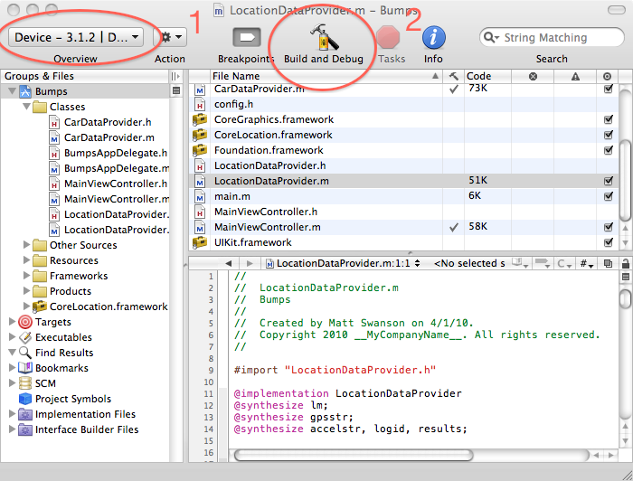

To build the Xcode project and download it to the iPhone, simply click "Build and Run" as highlighted in area #2. If simulator is selected from the menu highlighted by #1, the application will launch the simulator. If "Device" is selected in menu #1, the application will be downloaded to the iPhone over the USB cable.
